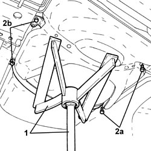
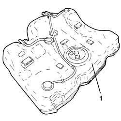
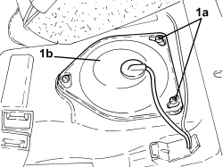
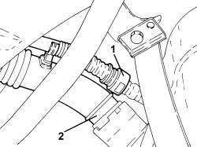

1040A10 FUEL TANK - R + R AND DECANT FUEL
- Path
- Procedures > 10 ENGINE > 1040 FUEL TANK AND PIPES > 1040A FUEL TANK AND COMPONENTS > 1040A10 FUEL TANK - R + R AND DECANT FUEL
- Kind
- repair procedure (removal / refitting; the operation number is the code)
- Applies to
- engines: 1.9 JTS, 2.2 JTS, 3.2 JTS, 1.9 JTD 8V, 1.9 JTD 16V, 2.4 JTD 20V; all production periods
- Interactive page
- https://sloeber94.github.io/elrnDB/alfa/159/en/#/939010492
Applies to: engines: 1.9 JTS, 2.2 JTS; all production periods
 Removing
Removing
 Refitting
Refitting- Position the vehicle on a lift.
- Make sure that the ignition key is in the OFF position, then disconnect the battery terminal (-).
Description | Connector | |
|---|---|---|
- | Battery |
Op. 7050A20 ONE-PIECE REAR SEAT CUSHION - R.R.
1. Undo the bolts (1a) and remove the access cover (1b) for the submerged pump assembly complete with level gauge.
2. Disconnect the electrical connection from the submerged pump assembly complete with level gauge.
Description | Connector | |
|---|---|---|
2 | Fuel pump and level gauge |
3. Disconnect the rapid connector for the fuel supply pipe, submerged pump assembly side complete with level gauge.

Applies to: engines: 1.9 JTS, 2.2 JTS; all production periods
1. Disconnect the rapid connector for the breather pipe, fuel tank side.
2. Disconnect the rapid connector for the fuel filler pipe, fuel tank side.

Applies to: engines: 1.9 JTS, 2.2 JTS; all production periods
1. Disconnect the quick-release connectors for the fuel vapour recovery pipes.

Applies to: engines: 1.9 JTS, 2.2 JTS; all production periods
1. Position a hydraulic jack with a suitable support under the fuel tank.
2. Undo the bolts (2a) and remove the fuel tank support belts (2b).

Applies to: engines: 1.9 JTS, 2.2 JTS; all production periods
1. Lower the hydraulic jack slowly and remove the fuel tank.

Applies to: engines: 1.9 JTS, 2.2 JTS; all production periods
Refitting
Removing- Place the fuel tank back in its housing using the hydraulic jack.
- Place the fuel tank support belts back in their housings and secure them tightening the bolts to the recommended torque.
Component | Fastening | dia | Value (daNm) | Validity |
|---|---|---|---|---|
Fuel tank | Bolt | M8 | (bodyshell side) 1.8 - 2.2 |
- Remove the hydraulic jack with a suitable support under the fuel tank.
- Connect the quick-release connectors for the fuel vapour recovery pipes.
- Connect the rapid connector for the fuel filler pipe, fuel tank side.
- Connect the rapid connector for the breather pipe, fuel tank side.
- Connect the rapid connector for the fuel supply pipe, submerged pump assembly side complete with level gauge.
- Connect the electrical connection to the submerged pump assembly complete with level gauge.
- Place the access cover to the submerged pump assembly complete with level gauge back in its housing and secure it using the bolts.
Op. 7050A20 ONE-PIECE REAR SEAT CUSHION - R.R.
- Connect the negative battery terminal.
- Remove the vehicle from the lift.
Applies to: engines: 1.9 JTD 8V, 1.9 JTD 16V, 2.4 JTD 20V; all production periods
Removing
Refitting- Position the vehicle on a lift.
- Make sure that the ignition key is in the OFF position, then disconnect the battery terminal (-).
Description | Connector | |
|---|---|---|
- | Battery |
Op. 7050A20 ONE-PIECE REAR SEAT CUSHION - R.R.
1. Undo the bolts (1a) and remove the access cover (1b) for the submerged pump assembly complete with level gauge.

Applies to: engines: 1.9 JTD 8V, 1.9 JTD 16V, 2.4 JTD 20V; all production periods
1. Disconnect the electrical connection from the submerged pump assembly complete with level gauge.
Description | Connector | |
|---|---|---|
1 | Fuel pump and level gauge |
2. Disconnect the rapid connectors for the fuel supply and return pipes, submereged pump assembly side complete with level gauge.

Applies to: engines: 1.9 JTD 8V, 1.9 JTD 16V, 2.4 JTD 20V; all production periods
1. Disconnect the rapid connector for the breather pipe, fuel tank side.
2. Disconnect the rapid connector for the fuel filler pipe, fuel tank side.

Applies to: engines: 1.9 JTD 8V, 1.9 JTD 16V, 2.4 JTD 20V; all production periods
1. Position a hydraulic jack with a suitable support under the fuel tank.
2. Undo the bolts (2a) and remove the fuel tank support belts (2b).

Applies to: engines: 1.9 JTD 8V, 1.9 JTD 16V, 2.4 JTD 20V; all production periods
1. Lower the hydraulic jack slowly and remove the fuel tank.

Applies to: engines: 1.9 JTD 8V, 1.9 JTD 16V, 2.4 JTD 20V; all production periods
Refitting
Removing- Place the fuel tank back in its housing using the hydraulic jack.
- Place the fuel tank support belts back in their housings and secure them tightening the bolts to the recommended torque.
Component | Fastening | dia | Value (daNm) | Validity |
|---|---|---|---|---|
Fuel tank | Bolt | M8 | (bodyshell side) 1.8 - 2.2 |
- Remove the hydraulic jack with a suitable support under the fuel tank.
- Connect the rapid connector for the fuel filler pipe, fuel tank side.
- Connect the rapid connector for the breather pipe, fuel tank side.
- Connect the rapid connectors for the fuel supply and return pipes, submereged pump assembly side complete with level gauge.
- Connect the electrical connection to the submerged pump assembly complete with level gauge.
- Place the access cover to the submerged pump assembly complete with level gauge back in its housing and secure it using the bolts.
Op. 7050A20 ONE-PIECE REAR SEAT CUSHION - R.R.
- Connect the negative battery terminal.
- Remove the vehicle from the lift.
Applies to: engines: 3.2 JTS; all production periods
Removing
RefittingOp. 4450B13 REAR WHEELS (TWO) - R.R
Op. 2720C10 DIFFERENCIAL UNIT - R.R.
Op. 2410A18 TRANSMISSION WITH JOINTS INCLUDED - R.R.
Op. 7050A20 ONE-PIECE REAR SEAT CUSHION - R.R.
1. Undo the bolts (1a) and move the access cover (1b) for the submerged pump assembly to one side.

Applies to: engines: 3.2 JTS; all production periods
1. Disconnect the electrical connection for the submerged pump assembly.
Description | Connector | |
|---|---|---|
1 | Fuel pump and level gauge |
2. Disconnect the fuel supply and return pipe rapid connectors.

Applies to: engines: 3.2 JTS; all production periods
1. Undo the nuts and remove the heat shield for the fuel tank.

Applies to: engines: 3.2 JTS; all production periods
1. Disconnect the rapid connector for the breather pipe, tank side.
2. Using pliers (2a), disconnect the rapid connector for the fuel filler pipe (2b), tank side.
Tool | Description | Function | Validity |
|---|---|---|---|
2000010500 | Caliper | Disconnect/ connect the fuel inlet pipe rapid connector |

Applies to: engines: 3.2 JTS; all production periods
1. Position a hydraulic jack with a suitable tool under the fuel tank.
Tool | Description | Function | Validity |
|---|---|---|---|
2000002300 | Support | Fuel tank support |
2. Undo the fastenings and remove the fuel tank support belts.
3. Lower the hydraulic jack slowly and remove the fuel tank assembly.

Applies to: engines: 3.2 JTS; all production periods
Refitting
Removing- Place the fuel tank back in its housing using the hydraulic jack and the support.
- Place the support belts back in their housings and secure them tightening the fastenings to the recommended torque.
Component | Fastening | dia | Value (daNm) | Validity |
|---|---|---|---|---|
Fuel tank | Nut | M8 | 2.2 ÷ 2.6 |
Component | Fastening | dia | Value (daNm) | Validity |
|---|---|---|---|---|
Fuel tank | Bolt | M8 | 2.2 ÷ 2.6 |
- Using the tool used for the removal, connect the rapid connector for the fuel filler pipe, tank side.
- Place the fuel tank heat shield in position and secure it using the nuts.
- Connect the fuel supply and return pipe rapid connectors.
- Connect the electrical connection for the submerged pump assembly.
- Place the submerged pump assembly access cover back in its housing and secure it using the bolts.
Op. 7050A20 ONE-PIECE REAR SEAT CUSHION - R.R.
Op. 2410A18 TRANSMISSION WITH JOINTS INCLUDED - R.R.
Topics linked from this page (6)
- 2410A18 TRANSMISSION WITH JOINTS INCLUDED - R.R.
- 2720C10 DIFFERENCIAL UNIT - R.R.
- 4450B13 REAR WHEELS (TWO) - R.R
- 7050A20 ONE-PIECE REAR SEAT CUSHION - R.R.
- A001 BATTERY
- N040 FUEL PUMP AND LEVEL GAUGE
Topics that link to this page (7)
- 1040A14 FUEL TANK - R + R FOR REPLACEMENT
- 1040B30 FUEL SUPPLY PIPE (ONE) - R.R.
- 1040B52 FUEL RETURN PIPE (ONE) - R.R.
- 1080E61 FUEL VAPOUR PIPE FROM VAPOUR FILTER TO INTERMEDIATE COUPLING - R.R.
- 1080E43 PIPE FROM FUEL TANK TO ACTIVE CHARCOAL FILTER - R.R.
- 3340B67 RIGID PIPE FROM RIGHT REAR BRAKE CONNECTOR - R.R.
- 3340B69 RIGID PIPE FROM LEFT RER BRAKE CONNECTOR - R.R.